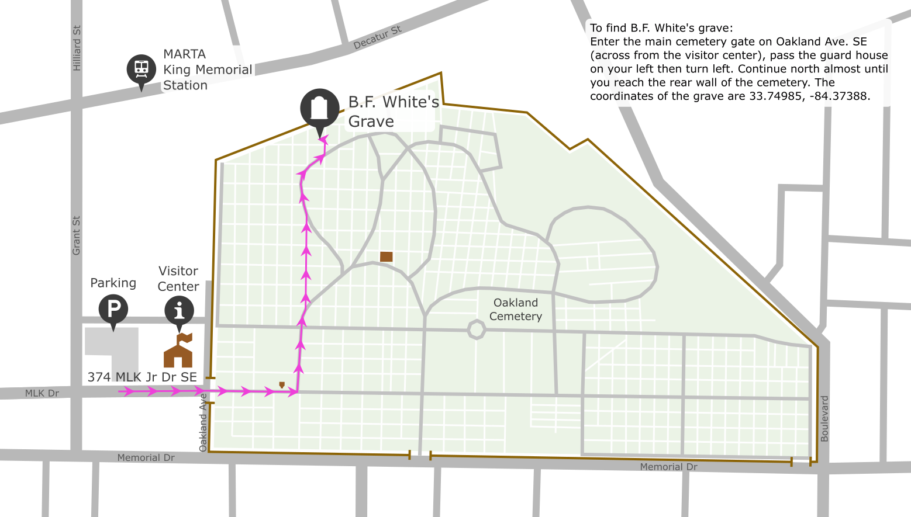

B. F. White's Grave, Oakland Cemetery, Atlanta
B. F. White, the original compiler of The Sacred Harp, is buried in Oakland Cemetery, Atlanta. Singers often like to visit his grave and sing a few songs.
Benjamin Franklin White was born in South Carolina in 1800. He married Thurza Golightly in 1825, and they had nine children. They moved to Georgia in 1842.
B. F. White and Elisha J. King transcribed, and composed tunes, compiling them into The Sacred Harp, which they published in 1844. King died shortly after the book was initially published, and White continued to revise the book and publish subsequent editions throughout his life.
White retired to DeKalb County, Georgia and died in 1879 following a fall on the street. He was buried in Oakland Cemetery in Atlanta.
If you are visiting town and are interested in having a few singers sing with you at the gravesite, shoot us an email. Many of us enjoy revisiting the cemetery and would be happy to join you.
Graves
As well as B. F. White and his wife Thurza, some of their family are also buried at Oakland Cemetery or in the metro Atlanta area:
The White family plot is at Section 4 Block 125.
Their son William Decatur White is buried nearby at Section 4 Block 118 Lot 4N.
Their children Robert H White and Mary Caroline “Carrie” (White) Adair were twins, b. 1831 in South Carolina.
Robert's gravestone is visible near his parents.
Carrie married an Alabama lawyer, William Adair. They had one daughter before he died early. Carrie moved back to Georgia, and taught insturmental music in the Atlanta area. She and her daughter are likely also buried with her family at Oakland Cemetery, but the grave is not marked.
Nancy Ogburn “Nannie” (White) Byrd's gravestone is visible near her parents. She was an accomplished leader of Sacred Harp music, and all her children were musicians.
James Landrum “J. L.” White, editor of multiple versions of “The White Book,” died 1925 in Decatur. He is buried 14 miles from Oakland Cemetery, at Ebenezer Methodist ("Miller/Clarke Family") Cemetery, GPS: 33.708965, -84.167921.


Parking & Transportation
The main parking lot for the cemetery is located at the main entrance, next to the visitor center, at 374 MLK Jr Dr SE, Atlanta, GA 30312. Street parking is also available in the area.
If the cemetery is not busy, it is often possible to drive into the cemetery via the west gate (across from the visitor center) and park near the grave.
King Memorial MARTA station is near the cemetery — about a 7-minute walk to the entrance. From the station, go south on Grant Street and then east on MLK Dr to reach the visitor center and main cemetery gate entrance.
Amenities & Hours
Admission to the cemetery is free. The visitor center is open 10-5 daily. (Check their website for the most recent hours.) The grounds are open from dawn to dusk year-round. The visitor center has restrooms and a gift shop, and they can provide information about scheduled or self-guided tours. Be aware that many events occur at the cemetery throughout the year, some of which may require paid admission.
Finding the Grave
B. F. White's grave is about a five-minute walk from the main Oakland Cemetery parking lot, or about a twelve-minute walk from King Memorial MARTA station.
Enter the main cemetery gate on Oakland Ave. SE (across from the visitor center), pass the guard house on your left then turn left. Continue north almost until you reach the rear wall of the cemetery. The coordinates of the grave are 33.74985, -84.37388. W3W: definite.scanner.raft.
-
 Park in the visitor center lot or the surrounding neighborhood, and enter the main cemetery gate across the street from the vistors center, at MLK &
Oakland Ave.
Park in the visitor center lot or the surrounding neighborhood, and enter the main cemetery gate across the street from the vistors center, at MLK &
Oakland Ave.
-
 Turn left just beyond the guard house.
Turn left just beyond the guard house.
-
 Take a slight left off the paved path to take this shortcut.
Take a slight left off the paved path to take this shortcut.
-
 Turn left to rejoin the paved path.
Turn left to rejoin the paved path.
-
 Watch for the huge southern magnolia tree on the left, and turn just beyond it. The graves are just past the wrought iron gate.
Watch for the huge southern magnolia tree on the left, and turn just beyond it. The graves are just past the wrought iron gate.
-
 The graves are just under the southern magnolia.
The graves are just under the southern magnolia.
Accessibility Information
There are some accessible parking spots available in front of the visitor center. Most of the route to the grave is well-paved. There is a cobblestone section at the entrance. The last couple cemetery blocks before reaching the grave are the most challenging. They include dirt and grass sections, including a brick gutter that must be navigated through.
Note that it is often possible to drive into the cemetery along the paved paths and park near the gravesite.

Last updated September 29, 2025. Additions, corrections, comments, or questions? Send us an email